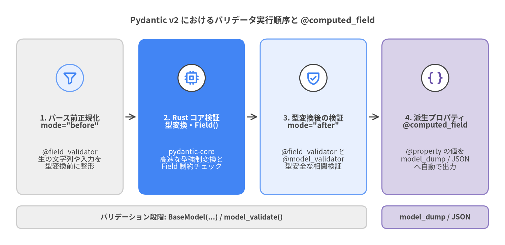
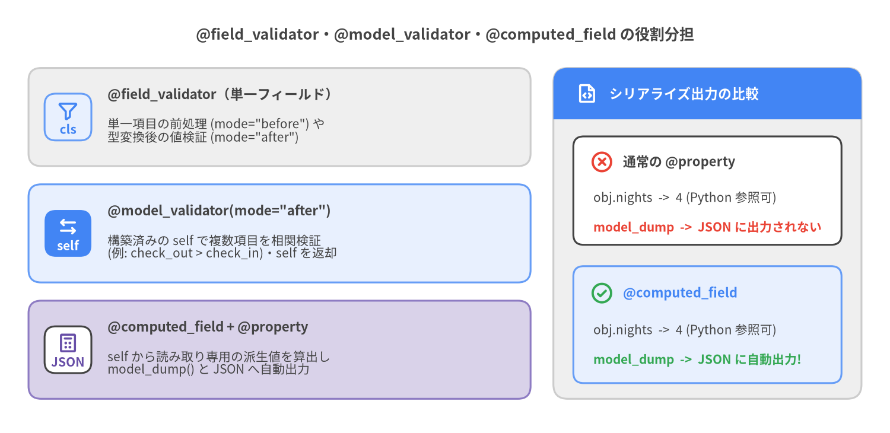

03. カスタムバリデータと @computed_field
組み込みの Field(...) 制約だけで表現しきれない実務のドメインルールは、パース前の正規化（@field_validator(..., mode="before")）、型変換後の単一項目チェック（@field_validator(..., mode="after")）、複数フィールド間の整合性検証（@model_validator(mode="after")）、そしてシリアライズ対象の派生プロパティ（@computed_field）という4段階で実装します。
これら4つのフックの正確な実行順序を押さえることで、Pydantic v2 の高速な Rust コアによる型変換を活かしつつ、入力クレンジングから JSON 出力への計算結果の自動付与までを一貫して記述できます。

View Drawlib Python Code
from drawlib.canvas import save, setup
from drawlib.icons import phosphor
from drawlib.shapes import rectangle
from drawlib.smartarts import CardList
from drawlib.styles import Styles
from drawlib.text import text
setup(width=152, height=74, dpi=150)
text(
(76.0, 67.8),
"Pydantic v2 におけるバリデータ実行順序と @computed_field",
style=Styles.DarkBold.patch(text_size=12.0),
)
stages = CardList(
style=Styles.Neutral,
text_style=Styles.DarkBold.patch(text_size=10.5),
description_style=Styles.Dark.patch(text_size=10.0),
badge_shape="circle",
badge_style=Styles.PrimaryNeutral,
icon_style=Styles.PrimaryBold,
direction="horizontal",
show_arrows=True,
arrow_style=Styles.Dark,
spacing=4.6,
)
stages.add(
'1. パース前正規化\nmode="before"',
"@field_validator\n生の文字列や入力を\n型変換前に整形",
icon=phosphor.funnel,
)
stages.add(
"2. Rust コア検証\n型変換・Field()",
"pydantic-core\n高速な型強制変換と\nField 制約チェック",
icon=phosphor.cpu,
style=Styles.PrimaryFlat,
text_style=Styles.WhiteBold.patch(text_size=10.5),
description_style=Styles.White.patch(text_size=10.0),
badge_style=Styles.White,
icon_style=Styles.PrimaryBold,
)
stages.add(
'3. 型変換後の検証\nmode="after"',
"@field_validator と\n@model_validator\n型安全な相関検証",
icon=phosphor.shield_check,
style=Styles.PrimaryNeutral,
badge_style=Styles.White,
)
stages.add(
"4. 派生プロパティ\n@computed_field",
"@property の値を\nmodel_dump / JSON\nへ自動で出力",
icon=phosphor.brackets_curly,
style=Styles.SecondaryNeutral,
badge_style=Styles.White,
icon_style=Styles.SecondaryBold,
)
stages.draw(xy=(5.0, 15.2), width=142.0, height=47.0, align="bottom_left")
# Phase summary bars underneath the 4 stages
rectangle(
(57.675, 8.4),
width=105.35,
height=6.8,
style=Styles.Neutral.patch(shape_r=1.5),
text="バリデーション段階: BaseModel(...) / model_validate()",
text_style=Styles.DarkBold.patch(text_size=10.0),
)
rectangle(
(130.975, 8.4),
width=32.05,
height=6.8,
style=Styles.SecondaryNeutral.patch(shape_r=1.5),
text="model_dump / JSON",
text_style=Styles.DarkBold.patch(text_size=10.0),
)
save()
1. @field_validator による単一フィールドの正規化と検証
@field_validator は、BaseModel の特定フィールドに対してカスタムの前処理や検証ロジックを紐づけます。デコレータの直下に @classmethod を配置し、未パースの生データを扱うか型変換後の Python オブジェクトを扱うかに応じて mode を使い分けます。
mode="before"（パース前の入力正規化）: Pydantic の Rust コアが型変換を行う 前 に実行されます。任意の未検証データ（object）が渡されるため、isinstance(...)で型を確認した上でカンマ区切り文字列" python, fastapi , ai "を["python", "fastapi", "ai"]へ分割し、既にlist[str]の入力はそのまま通過させます。mode="after"（既定値・型変換後の単一項目チェック）: Rust コアの検証を通過した 後 に実行されるため、引数が注釈どおりの型（str）であることが保証されます。予約語"admin"の拒否などドメインルールに違反する場合はValueErrorを送出すると、Pydantic が自動的に構造化されたValidationErrorへ変換します。
!pip install -q pydantic
from pydantic import BaseModel, ValidationError, field_validator
RESERVED_USERNAMES = {"admin", "root", "system"}
class UserProfile(BaseModel):
username: str
tags: list[str] = []
@field_validator("tags", mode="before")
@classmethod
def split_csv_tags(cls, value: object) -> object:
if isinstance(value, str):
return [tag.strip().lower() for tag in value.split(",") if tag.strip()]
return value
@field_validator("username", mode="after")
@classmethod
def normalize_and_check_username(cls, value: str) -> str:
cleaned = value.strip().lower()
if not cleaned:
raise ValueError("username cannot be blank")
if cleaned in RESERVED_USERNAMES:
raise ValueError(f"'{cleaned}' is a reserved username")
return cleaned
profile = UserProfile(username=" Alice_Dev ", tags=" python, fastapi , ai ")
print("Normalized profile:", profile)
print("Dumped dict:", profile.model_dump())
try:
UserProfile(username="Admin", tags=["ops", "security"])
except ValidationError as err:
print("\nRejected reserved username:")
for issue in err.errors():
print(f" loc={issue['loc']} | type={issue['type']} | msg={issue['msg']}")
Normalized profile: username='alice_dev' tags=['python', 'fastapi', 'ai']
Dumped dict: {'username': 'alice_dev', 'tags': ['python', 'fastapi', 'ai']}
Rejected reserved username:
loc=('username',) | type=value_error | msg=Value error, 'admin' is a reserved username
補足: バリデータ内では
ValidationErrorを直接生成せず、ValueError（またはAssertionError）を送出してください。Pydantic v2 がValueErrorを捕捉し、エラー発生箇所（loc）や入力値を付与したValidationErrorを構築します。
2. 複数フィールド相関検証（@model_validator）と @computed_field
@field_validator は個々のフィールドを独立して検証するため、他フィールドとの前後関係や整合性の検証には向きません。複数フィールドにまたがる不変条件（インバリアント）の検証や、算出プロパティの JSON シリアライズには @model_validator(mode="after") と @computed_field を組み合わせます。
@model_validator(mode="after"): 全フィールドの型変換と単一検証が完了した後のインスタンスselfを受け取ります（例:check_inとcheck_outは既にdatetime.date型）。self.check_out > self.check_inのような相関ルールを検査し、最後に必ずreturn selfを返します。@computed_field+@property: 通常の Python@propertyはコード上からbooking.nightsで参照できてもシリアライズ時には除外されますが、@computed_fieldを@propertyの上に重ねると、model_dump()とmodel_dump_json()の出力に計算結果が自動的に含まれます。

View Drawlib Python Code
from drawlib.canvas import save, setup
from drawlib.icons import phosphor
from drawlib.shapes import rectangle
from drawlib.smartarts import CardList, Panel
from drawlib.styles import Styles
from drawlib.text import text
setup(width=156, height=76, dpi=150)
text(
(78.0, 69.8),
"@field_validator・@model_validator・@computed_field の役割分担",
style=Styles.DarkBold.patch(text_size=12.0),
)
hooks = CardList(
style=Styles.Neutral,
text_style=Styles.DarkBold.patch(text_size=10.8),
description_style=Styles.Dark.patch(text_size=10.0),
badge_shape="rounded_rect",
badge_style=Styles.PrimaryNeutral,
badge_text_style=Styles.PrimaryBold.patch(text_size=10.0),
icon_style=Styles.PrimaryBold,
direction="vertical",
spacing=3.2,
)
hooks.add(
"@field_validator（単一フィールド）",
'単一項目の前処理 (mode="before") や\n型変換後の値検証 (mode="after")',
badge_text="cls",
icon=phosphor.funnel,
)
hooks.add(
'@model_validator(mode="after")',
"構築済みの self で複数項目を相関検証\n(例: check_out > check_in)・self を返却",
badge_text="self",
icon=phosphor.arrows_left_right,
style=Styles.PrimaryNeutral,
badge_style=Styles.PrimaryFlat,
badge_text_style=Styles.WhiteBold.patch(text_size=10.0),
icon_style=Styles.WhiteBold,
)
hooks.add(
"@computed_field + @property",
"self から読み取り専用の派生値を算出し\nmodel_dump() と JSON へ自動出力",
badge_text="JSON",
icon=phosphor.calculator,
style=Styles.SecondaryNeutral,
badge_style=Styles.White,
badge_text_style=Styles.SecondaryBold.patch(text_size=10.0),
icon_style=Styles.SecondaryBold,
)
hooks.draw(xy=(5.0, 6.0), width=88.0, height=58.0, align="bottom_left")
out_panel = Panel(
"シリアライズ出力の比較",
style=Styles.Neutral,
header_style=Styles.PrimaryFlat,
text_style=Styles.WhiteBold.patch(text_size=10.8),
icon=phosphor.file_code,
icon_style=Styles.WhiteBold,
header_variant="filled",
header_height=9.0,
)
out_panel.draw((97.0, 6.0), width=54.0, height=58.0, align="bottom_left")
# Top comparison card: Plain @property
rectangle((124.0, 42.5), width=47.0, height=19.0, style=Styles.White.patch(shape_r=1.8))
phosphor.x_circle((105.5, 47.5), width=4.2, style=Styles.DangerBold)
text((109.2, 47.5), "通常の @property", style=Styles.DarkBold.patch(text_size=10.5, halign="left"))
text((104.0, 41.2), "obj.nights -> 4 (Python 参照可)", style=Styles.Dark.patch(text_size=10.0, halign="left"))
text((104.0, 36.0), "model_dump -> JSON に出力されない", style=Styles.DangerBold.patch(text_size=10.0, halign="left"))
# Bottom comparison card: @computed_field
rectangle((124.0, 19.0), width=47.0, height=20.5, style=Styles.PrimaryNeutral.patch(shape_r=1.8))
phosphor.check_circle((105.5, 24.5), width=4.2, style=Styles.SuccessBold)
text((109.2, 24.5), "@computed_field", style=Styles.PrimaryBold.patch(text_size=10.5, halign="left"))
text((104.0, 18.0), "obj.nights -> 4 (Python 参照可)", style=Styles.Dark.patch(text_size=10.0, halign="left"))
text((104.0, 12.8), "model_dump -> JSON に自動出力!", style=Styles.SuccessBold.patch(text_size=10.0, halign="left"))
save()
日付範囲の相関検証と派生フィールドの JSON 出力
宿泊予約モデル HotelBooking に @model_validator(mode="after") と @computed_field を実装して動作を確認しましょう。ISO 形式の日付文字列（"2026-05-10"）がまず datetime.date へ型変換され、check_out > check_in の検証を通過した後、nights（宿泊数）と total_price（合計金額）が JSON ペイロードへ自動的に出力されます。
from datetime import date
from typing import Self
from pydantic import BaseModel, Field, ValidationError, computed_field, model_validator
class HotelBooking(BaseModel):
check_in: date
check_out: date
nightly_rate: int = Field(gt=0)
@model_validator(mode="after")
def check_date_order(self) -> Self:
if self.check_out <= self.check_in:
raise ValueError("check_out must be strictly after check_in")
return self
@computed_field
@property
def nights(self) -> int:
return (self.check_out - self.check_in).days
@computed_field
@property
def total_price(self) -> int:
return self.nights * self.nightly_rate
booking = HotelBooking(
check_in="2026-05-10",
check_out="2026-05-14",
nightly_rate=180,
)
print("Serialized JSON with @computed_field values:")
print(booking.model_dump_json(indent=2))
try:
HotelBooking(
check_in="2026-05-14",
check_out="2026-05-10",
nightly_rate=180,
)
except ValidationError as err:
print("\nCaught invalid date range:")
for issue in err.errors():
print(f" loc={issue['loc']} | type={issue['type']} | msg={issue['msg']}")
Serialized JSON with @computed_field values:
{
"check_in": "2026-05-10",
"check_out": "2026-05-14",
"nightly_rate": 180,
"nights": 4,
"total_price": 720
}
Caught invalid date range:
loc=() | type=value_error | msg=Value error, check_out must be strictly after check_in
まとめ
- 生データの整形は
mode="before"、型安全な単一検証はmode="after": 間の型強制変換をpydantic-coreに任せることで、mode="after"では確実に型付けされた値を扱えます。 - 複数フィールド間の不変条件は
@model_validator(mode="after"): 構築済みのselfに対してcheck_out > check_inなどの相関ルールを検証し、必ずreturn selfを返します。 - レスポンスに含める算出値は
@computed_field:@propertyの上に@computed_fieldを重ねることで、nightsやtotal_priceをmodel_dump()および JSON 出力へ自動反映できます。